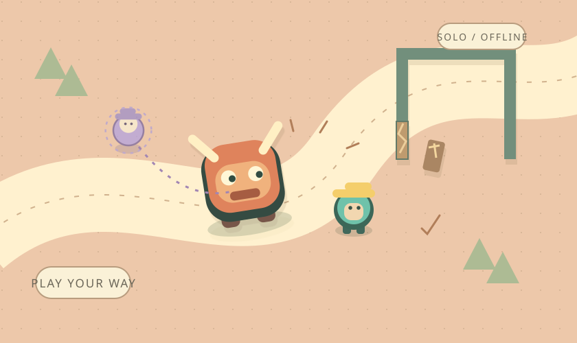
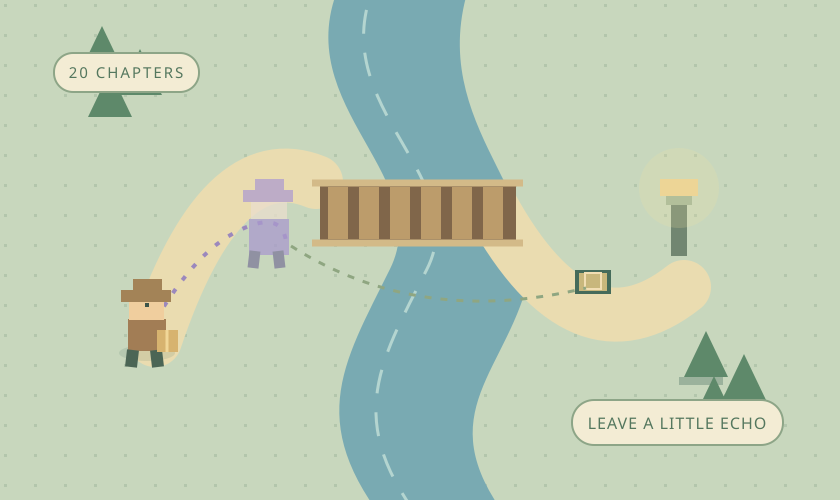
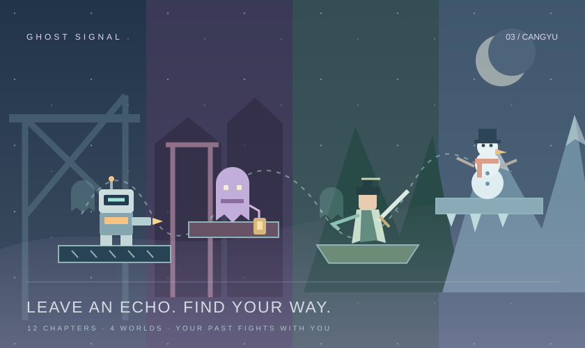

借力冒险玩法插画01 / BORROW A BUMP v0.6.1
借你一撞
让怪兽，替你闯点祸。
引它撞墙，骑它开路，再让过去的自己来帮忙。去雾里提灯、丹谷借火，或在冰面上推一颗越滚越大的雪球。
小小的单机游戏，也想装下你的奇思妙想。
引怪兽开路，和过去的自己一起闯关。
挑一款，慢慢玩出自己的办法。


目前收录 3 款游戏。
各自更新，各自保留一点不一样。
找到 3 款游戏

借力冒险玩法插画让怪兽，替你闯点祸。
引它撞墙，骑它开路，再让过去的自己来帮忙。去雾里提灯、丹谷借火，或在冰面上推一颗越滚越大的雪球。
这次走过的路，留给下一次的自己。
做一个送信人，留下过去的自己。安排分身、木箱和包裹，接通信号，跨过河岸，把每段旅途慢慢走通。
留下一个影子，带自己闯出去。
穿过机甲、雾院、修仙和冰原四种场景，探索 12 个关卡。用不同角色战斗、找回物件；失败留下的鬼魂，可以回放行动与攻击，替你吸引守卫、打开新的路。
试试其他关键词，或回到全部游戏。
把每次修改留下来。
你能看到这次多了什么，
也能找到上一版。
目前提供浏览器版游戏。
不用注册，也不用安装启动器。
先看介绍和版本。想先试一试，可以点“在线试玩”。
下载的是 ZIP 压缩包。右键选择“全部解压”，不要在压缩包里直接打开。
用 Edge、Chrome 或 Firefox 打开解压后的 index.html，离线也能玩。
在线试玩与下载包采用同一版本。存档保存在当前浏览器；在线版和本地版的进度可能不同。
各款游戏使用独立存档。《留在这里的我》可在游戏内下载和导入 JSON 存档，方便换版本或设备后继续。其他游戏更新前建议保留原文件夹；移动文件、换浏览器或清除浏览器数据后，可能无法读取旧进度。
游戏提供了简易触屏按钮，目前主要按电脑键盘操作设计。建议先在电脑浏览器试玩；手机端的完整体验仍在调整。
展开游戏卡片的“版本与更新”，可以下载对应的试玩反馈模板。记下游戏名、版本、关卡或地图，以及发生前的几步操作，再发给把游戏分享给你的人。这里没有自动上传或提交表单。
这里是沧屿的小小游戏屋。先认真做出一点好玩，再和喜欢它的人一起，慢慢改好。